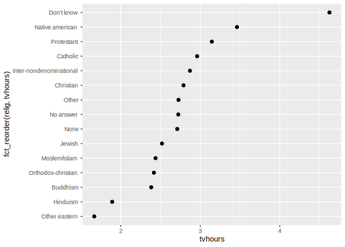
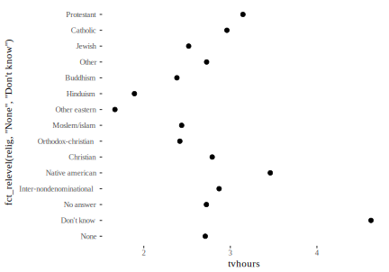
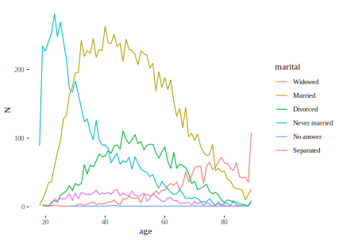
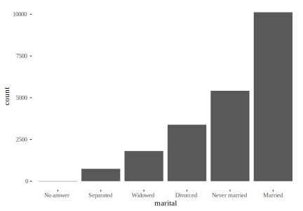

13 Tidyverse
Tidyverse on osa R-i ökosüsteemist, kus kehtivad omad reeglid. Tidyverse raamatukogud lähtuvad ühtsest filosoofiast ja töötavad hästi koos. Tidyverse algab andmetabeli struktuurist ja selle funktsioonid võtavad reeglina sisse õige struktuuriga tibble ja väljastavad samuti tibble, mis sobib hästi järgmise tidyverse funktsiooni sisendiks. Seega on tidyverse hästi sobiv läbi torude %>% laskmiseks. Tidyverse-ga sobib hästi kokku ka ggplot2 graafikasüsteem.
Laadime tidyverse metapaketi raamatukogud:
library(tidyverse)Nagu näha laaditakse tidyverse raamatukoguga 8 paketti:
✔ ggplot2 ✔ purrr
✔ tibble ✔ dplyr
✔ tidyr ✔ stringr
✔ readr ✔ forcats
- tibble pakett sisaldab tidyverse-spetsiifilise andmeraami (data_frame) loomiseks ja manipuleerimiseks vajalike funktsioone. Erinevalt baas R-i andmeraamist (data.frame) iseloomustab tibble-t vaikimisi prindifunktsioon, kus vaikimisi näidataksegi ainult tabeli peast 10 esimest rida. Oluliseks erinevuseks on ka list tulpade toetus (data.frame tulbad saavad olla ainult vektorid). List tulbad võimaldavad andmeraami paigutada kõige erinevamaid objekte: näiteks vektoreid, andmeraame, lineaarseid mudeleid ja valgeid puudleid. Lisaks ei ole tibble tabelitel veerunimesid ja veidraid tulbanimesid ei muudeta vaikimisi/automaatselt.
- tidyr pakett sisaldab eelkõige funktsioone tibble-de kuju muutmiseks laiast formaadist pikka ja tagasi.
- readr paketi funktsioonid vastutavad andmete impordi eest tekstipõhistest failidest lähtuvalt tidyverse reeglitest ja asendavad vastavad baas R-i funktsioonid.
- purrr pakett sisaldab funktsioone töötamaks listidega ja asendavad baas R-i apply perekonna funktsioone.
- dplyr pakett sisaldab põhilisi andmetöötlusverbe.
- stringr ja forcats paketid sisaldavad vastavalt tekstipõhiste ja kategooriliste andmetega töötamise funktsioone.
13.1 Tidy tabeli struktuur
- väärtus (value) — ühe mõõtmise tulemus (183 cm)
- muutuja (variable) — see, mida sa mõõdad (pikkus) või faktor (sex)
- andmepunkt (observation) — väärtused, mis mõõdeti samal katsetingimusel (1. subjekti pikkus ja kaal 3h ajapunktis)
- vaatlusühik (unit of measurement) — keda mõõdeti (subjekt nr)
- vaatlusühiku tüüp — inimene, hiir, jt
vaatlusühiku tüüp = tabel
muutuja = veerg
andmepunkt = rida
vaatlusühikute koodid on kõik koos ühes veerus
Veergude järjekord tabelis on 1. vaatlusühik, 2. faktor, mis annab katse-kontrolli erisuse, 3. kõik see, mida otse ei mõõdetud (sex, batch nr, etc.), 4. numbritega veerud (iga muutuja kohta üks veerg)
#> # A tibble: 2 x 6
#> subject drug sex time length weigth
#> <chr> <chr> <chr> <dbl> <dbl> <dbl>
#> 1 1 exp F 3 168 88
#> 2 2 placebo M 3 176 91Nii näeb välja tidy tibble. Kõik analüüsil vajalikud parameetrid tuleks siia tabelisse veeru kaupa sisse tuua. Näiteks, kui mõõtmised on sooritatud erinevates keskustes erinevate inimeste poolt kasutades sama ravimi erinevaid preparaate, oleks hea siia veel 3 veergu lisada (center, experimenter, batch).
13.1.1 Tabeli dimensioonide muutmine (pikk ja lai formaat)
Väga oluline osa tidyverses töötamisest on tabelite pika ja laia formaadi vahel viimine.
See on laias formaadis tabel df, mis ei ole tidy
#> # A tibble: 3 x 5
#> subject sex control experiment_1 experiment_2
#> <chr> <chr> <dbl> <dbl> <dbl>
#> 1 Tim M 23 34 40
#> 2 Ann F 31 38 42
#> 3 Jill F 30 36 44Kõigepealt pikka formaati. key ja value argumendid on ainult uute veergude nimetamiseks, oluline on 3:ncol(dat) argument, mis ütleb, et “kogu kokku veerud alates 3. veerust”. Alternatiivne viis seda öelda: c(-subject, -sex).
dat_lng <- gather(dat, key = experiment, value = value, 3:ncol(dat))
# df_l3<-df %>% gather(experiment, value, 3:ncol(df)) works as well.
#df_l4<-df %>% gather(experiment, value, c(-subject, -sex)) works as well
dat_lng
#> # A tibble: 9 x 4
#> subject sex experiment value
#> <chr> <chr> <chr> <dbl>
#> 1 Tim M control 23
#> 2 Ann F control 31
#> 3 Jill F control 30
#> 4 Tim M experiment_1 34
#> 5 Ann F experiment_1 38
#> 6 Jill F experiment_1 36
#> # ... with 3 more rowsPaneme selle tagasi algsesse laia formaati: ?spread
spread(dat_lng, key = experiment, value = value)
#> # A tibble: 3 x 5
#> subject sex control experiment_1 experiment_2
#> <chr> <chr> <dbl> <dbl> <dbl>
#> 1 Ann F 31 38 42
#> 2 Jill F 30 36 44
#> 3 Tim M 23 34 40key viitab pika tabeli veerule, mille väärtustest tulevad laias tabelis uute veergude nimed. value viitab pika tabeli veerule, kust võetakse arvud, mis uues laias tabelis uute veergude vahel laiali jagatakse.
13.1.2 Tibble transpose — read veergudeks ja vastupidi
dat <- tibble(a = c("tim", "tom", "jill"), b1 = c(1, 2, 3), b2 = c(4, 5, 6))
dat
#> # A tibble: 3 x 3
#> a b1 b2
#> <chr> <dbl> <dbl>
#> 1 tim 1 4
#> 2 tom 2 5
#> 3 jill 3 6Me kasutame selleks maatriksarvutuse funktsiooni t() — transpose. See võtab sisse ainult numbrilisi veerge, seega anname talle ette df miinus 1. veerg, mille sisu me konverteerime uue tablei veerunimedeks.
dat1 <- t(dat[,-1])
colnames(dat1) <- dat$a
dat1
#> tim tom jill
#> b1 1 2 3
#> b2 4 5 613.2 dplyr ja selle viis verbi
Need tuleb teil omale pähe ajada sest nende 5 verbiga (pluss gather ja spread) saab lihtsalt teha 90% andmeväänamisest, mida teil elus ette tuleb. NB! Check the data wrangling cheatsheet and dplyr help for further details. dplyr laetakse koos tidyverse-ga automaatselt teie workspace-i.
13.2.1 select() columns
select() selects, renames, and re-orders columns.
Select columns from sex to value:
iris
select(iris, Petal.Length:Species)
select(iris, -(Petal.Length:Species)) #selects everything, except those colsTo select 3 columns and rename subject to SUBJ and put liik as the 1st col:
select(iris, liik = Species, Sepal.Length, Sepal.Width) %>% dplyr::as_data_frame()
#> # A tibble: 150 x 3
#> liik Sepal.Length Sepal.Width
#> <fct> <dbl> <dbl>
#> 1 setosa 5.1 3.5
#> 2 setosa 4.9 3
#> 3 setosa 4.7 3.2
#> 4 setosa 4.6 3.1
#> 5 setosa 5 3.6
#> 6 setosa 5.4 3.9
#> # ... with 144 more rowsTo select all cols, except sex and value, and rename the subject col:
select(iris, -Sepal.Length, -Sepal.Width, liik = Species)helper functions you can use within select():
starts_with("abc"): matches names that begin with “abc.”
ends_with("xyz"): matches names that end with “xyz.”
contains("ijk"): matches names that contain “ijk.”
matches("(.)\\1"): selects variables that match a regular expression. This one matches any variables that contain repeated characters.
num_range("x", 1:3) matches x1, x2 and x3.
iris <- as_tibble(iris)
select(iris, starts_with("Petal"))
#> # A tibble: 150 x 2
#> Petal.Length Petal.Width
#> <dbl> <dbl>
#> 1 1.4 0.2
#> 2 1.4 0.2
#> 3 1.3 0.2
#> 4 1.5 0.2
#> 5 1.4 0.2
#> 6 1.7 0.4
#> # ... with 144 more rows
select(iris, ends_with("Width"))
#> # A tibble: 150 x 2
#> Sepal.Width Petal.Width
#> <dbl> <dbl>
#> 1 3.5 0.2
#> 2 3 0.2
#> 3 3.2 0.2
#> 4 3.1 0.2
#> 5 3.6 0.2
#> 6 3.9 0.4
#> # ... with 144 more rows
# Move Species variable to the front
select(iris, Species, everything())
#> # A tibble: 150 x 5
#> Species Sepal.Length Sepal.Width Petal.Length
#> <fct> <dbl> <dbl> <dbl>
#> 1 setosa 5.1 3.5 1.4
#> 2 setosa 4.9 3 1.4
#> 3 setosa 4.7 3.2 1.3
#> 4 setosa 4.6 3.1 1.5
#> 5 setosa 5 3.6 1.4
#> 6 setosa 5.4 3.9 1.7
#> # ... with 144 more rows, and 1 more variable:
#> # Petal.Width <dbl>
dat <- as.data.frame(matrix(runif(100), nrow = 10))
dat <- tbl_df(dat[c(3, 4, 7, 1, 9, 8, 5, 2, 6, 10)])
select(dat, V9:V6)
#> # A tibble: 10 x 5
#> V9 V8 V5 V2 V6
#> <dbl> <dbl> <dbl> <dbl> <dbl>
#> 1 0.514 0.858 0.532 0.507 0.110
#> 2 0.455 0.292 0.327 0.251 0.992
#> 3 0.839 0.927 0.964 0.681 0.0929
#> 4 0.0390 0.134 0.704 0.620 0.771
#> 5 0.0206 0.864 0.847 0.887 0.409
#> 6 0.698 0.232 0.851 0.0507 0.317
#> # ... with 4 more rows
select(dat, num_range("V", 9:6))
#> # A tibble: 10 x 4
#> V9 V8 V7 V6
#> <dbl> <dbl> <dbl> <dbl>
#> 1 0.514 0.858 0.982 0.110
#> 2 0.455 0.292 0.00324 0.992
#> 3 0.839 0.927 0.428 0.0929
#> 4 0.0390 0.134 0.923 0.771
#> 5 0.0206 0.864 0.918 0.409
#> 6 0.698 0.232 0.198 0.317
#> # ... with 4 more rows
# Drop variables with -
select(iris, -starts_with("Petal"))
#> # A tibble: 150 x 3
#> Sepal.Length Sepal.Width Species
#> <dbl> <dbl> <fct>
#> 1 5.1 3.5 setosa
#> 2 4.9 3 setosa
#> 3 4.7 3.2 setosa
#> 4 4.6 3.1 setosa
#> 5 5 3.6 setosa
#> 6 5.4 3.9 setosa
#> # ... with 144 more rows
# Renaming -----------------------------------------
# select() keeps only the variables you specify
# rename() keeps all variables
rename(iris, petal_length = Petal.Length)
#> # A tibble: 150 x 5
#> Sepal.Length Sepal.Width petal_length Petal.Width
#> <dbl> <dbl> <dbl> <dbl>
#> 1 5.1 3.5 1.4 0.2
#> 2 4.9 3 1.4 0.2
#> 3 4.7 3.2 1.3 0.2
#> 4 4.6 3.1 1.5 0.2
#> 5 5 3.6 1.4 0.2
#> 6 5.4 3.9 1.7 0.4
#> # ... with 144 more rows, and 1 more variable:
#> # Species <fct>13.2.2 filter() rows
Keep rows in Iris that have Species level “setosa” and Sepal.Length value <4.5.
filter(iris, Species=="setosa" & Sepal.Length < 4.5)
#> # A tibble: 4 x 5
#> Sepal.Length Sepal.Width Petal.Length Petal.Width
#> <dbl> <dbl> <dbl> <dbl>
#> 1 4.4 2.9 1.4 0.2
#> 2 4.3 3 1.1 0.1
#> 3 4.4 3 1.3 0.2
#> 4 4.4 3.2 1.3 0.2
#> # ... with 1 more variable: Species <fct>Keep rows in Iris that have Species level “setosa” or Sepal.Length value <4.5.
filter(iris, Species=="setosa" | Sepal.Length < 4.5)
#> # A tibble: 50 x 5
#> Sepal.Length Sepal.Width Petal.Length Petal.Width
#> <dbl> <dbl> <dbl> <dbl>
#> 1 5.1 3.5 1.4 0.2
#> 2 4.9 3 1.4 0.2
#> 3 4.7 3.2 1.3 0.2
#> 4 4.6 3.1 1.5 0.2
#> 5 5 3.6 1.4 0.2
#> 6 5.4 3.9 1.7 0.4
#> # ... with 44 more rows, and 1 more variable:
#> # Species <fct>Keep rows in Iris that have Species level “not setosa” or Sepal.Length value <4.5.
filter(iris, Species !="setosa" | Sepal.Length < 4.5)
#> # A tibble: 104 x 5
#> Sepal.Length Sepal.Width Petal.Length Petal.Width
#> <dbl> <dbl> <dbl> <dbl>
#> 1 4.4 2.9 1.4 0.2
#> 2 4.3 3 1.1 0.1
#> 3 4.4 3 1.3 0.2
#> 4 4.4 3.2 1.3 0.2
#> 5 7 3.2 4.7 1.4
#> 6 6.4 3.2 4.5 1.5
#> # ... with 98 more rows, and 1 more variable:
#> # Species <fct>Kui tahame samast veerust filtreerida “või” ehk “|” abil mitu väärtust, on meil valida kahe samaväärse variandi vahel (tegelikult töötab 2. variant ka ühe väärtuse korral)
filter(iris, Species =="setosa" | Species =="versicolor")
filter(iris, Species %in% c("setosa", "versicolor") )Nagu näha, 2. variant on oluliselt lühem.
Filtreerime regulaarekspressiooniga: read, kus Species algab v tähega
library(stringr)
filter(iris, str_detect(Species, "^v"))
#> # A tibble: 100 x 5
#> Sepal.Length Sepal.Width Petal.Length Petal.Width
#> <dbl> <dbl> <dbl> <dbl>
#> 1 7 3.2 4.7 1.4
#> 2 6.4 3.2 4.5 1.5
#> 3 6.9 3.1 4.9 1.5
#> 4 5.5 2.3 4 1.3
#> 5 6.5 2.8 4.6 1.5
#> 6 5.7 2.8 4.5 1.3
#> # ... with 94 more rows, and 1 more variable:
#> # Species <fct>eemalda NAdega read kahe veeru põhjal
filter(flights, !is.na(dep_delay), !is.na(arr_delay))13.2.3 summarise()
Mitu rida summeeritakse üheks väärtuseks veeru kaupa. Kõigepealt summeerime kogu tabeli nii, et saame (1) keskmise Sepal-length-i, (2) standardhälbe samast, (3) tabeli ridade arvu ja (4) mitu erinevat Species-t on tabelis
summarise(iris,
MEAN = mean(Sepal.Length),
SD = sd(Sepal.Length),
N = n(),
n_species = n_distinct(Species))
#> # A tibble: 1 x 4
#> MEAN SD N n_species
#> <dbl> <dbl> <int> <int>
#> 1 5.84 0.828 150 3n() loeb üles, mitu väärtust läks selle summary statistic-u arvutusse,
n_distinct() loeb üles, mitu unikaalset väärtust läks samasse arvutusse.
Summarise on kasulikum, kui teda kasutada koos järgmise verbi, group_by-ga.
13.2.4 group_by()
group_by() grupeerib väärtused, nii et neid saab grupi kaupa summeerida või muteerida. Näiteks grupeerides Species kaupa, saame arvutada summaarsed statistikud igale liigile
iris_grouped <- group_by(iris, Species)
summarise(iris_grouped,
MEAN = mean(Sepal.Length),
SD = sd(Sepal.Length),
N = n(),
n_species = n_distinct(Species))
#> # A tibble: 3 x 5
#> Species MEAN SD N n_species
#> <fct> <dbl> <dbl> <int> <int>
#> 1 setosa 5.01 0.352 50 1
#> 2 versicolor 5.94 0.516 50 1
#> 3 virginica 6.59 0.636 50 1summarise() argumendid on indentsed eelmise näitega aga tulemus ei ole. Siin me rakendame summarise verbi mitte kogu tabelile, vaid 3-le virtuaalsele tabelile, mis on saadud algsest tabelist.
group_by()-le saab anda järjest mitu grupeerivat muutujat. Siis ta grupeerib kõigepealt neist esimese järgi, seejärel lõõb saadud grupid omakorda lahku teise argumendi järgi ja nii edasi kuni teie poolt antud argumendid otsa saavad.
pro tip Kui tahad summaarseid statistikuid algse pika tabeli sisse uute veergudena (igale grupeeringu tasemele vastavad siis summeeriva statistiku identsed väärtused rea kaupa), kasuta peale group_by() verbi mutate(), mitte summarise().
mutate(iris_grouped,
MEAN = mean(Sepal.Length),
SD = sd(Sepal.Length))
#> # A tibble: 150 x 7
#> # Groups: Species [3]
#> Sepal.Length Sepal.Width Petal.Length Petal.Width
#> <dbl> <dbl> <dbl> <dbl>
#> 1 5.1 3.5 1.4 0.2
#> 2 4.9 3 1.4 0.2
#> 3 4.7 3.2 1.3 0.2
#> 4 4.6 3.1 1.5 0.2
#> 5 5 3.6 1.4 0.2
#> 6 5.4 3.9 1.7 0.4
#> # ... with 144 more rows, and 3 more variables:
#> # Species <fct>, MEAN <dbl>, SD <dbl>Anna igast grupist 3 kõrgeimat väärtust või 2 madalaimat väärtust. Samad numbrid erinevates ridades antakse kõik - selle pärast on meil tabelis rohkem ridu.
top_n(iris_grouped, 3, Sepal.Length)
top_n(iris_grouped, -2, Sepal.Length)13.2.5 mutate()
Mutate põhikasutus on siiski uute veergude tekitamine, mis võtavad endale inputi rea kaupa. Seega tabeli ridade arv ei muutu.
tranformeeri tabeli “df” veerg “value” uueks veeruks “log_value”, kus on log2-transformeeritud numbrid: df %>% mutate(log_value = log2(value)).
Uues veerus on vana veeru numbritest lahutatud konstant (näiteks vana veeru keskväärtus): df %>% mutate(centered_value = value - mean(value) ).
Mutate() lisab veerge ja transmute() kaotab ühtlasi ära vanad veerud
Uus veerg log-väärtustega, mis põhineb “value” veerul, millele anname nime “log_value”.
mutate(dat_lng, log_value = log(value))
#> # A tibble: 9 x 5
#> subject sex experiment value log_value
#> <chr> <chr> <chr> <dbl> <dbl>
#> 1 Tim M control 23 3.14
#> 2 Ann F control 31 3.43
#> 3 Jill F control 30 3.40
#> 4 Tim M experiment_1 34 3.53
#> 5 Ann F experiment_1 38 3.64
#> 6 Jill F experiment_1 36 3.58
#> # ... with 3 more rowsSama transmute() kasutades. Me säilitame lisaks “subject” veeru ja säilitame ning nimetame ümber “sex” veeru.
transmute(dat_lng, subject, gender = sex, log_value = log(value))
#> # A tibble: 9 x 3
#> subject gender log_value
#> <chr> <chr> <dbl>
#> 1 Tim M 3.14
#> 2 Ann F 3.43
#> 3 Jill F 3.40
#> 4 Tim M 3.53
#> 5 Ann F 3.64
#> 6 Jill F 3.58
#> # ... with 3 more rowsSelekteerime veerud “year” kuni “day”, veerud, mille nimed lõppevad stringiga “delay”, veerud “distance” ja “air_time”. Seejärel loome uue veerud “gain” (kasutades selleks arr_delay ja dep_delay andmeid rea kaupa), “hours” (air_time jagatud konstandiga) ja “gain_per_hour”:
flights_sml <- select(flights,
year:day,
ends_with("delay"),
distance,
air_time) %>%
mutate(gain = arr_delay - dep_delay,
hours = air_time / 60,
gain_per_hour = gain / hours)mutate_all(), mutate_if() and mutate_at() and the three variants of transmute() (transmute_all(), transmute_if(), transmute_at()) make it easy to apply a transformation to a selection of variables. See help.
Kõigepealt grupeeri, siis muteeri. Konstandid Mean(value) ja sd(value) arvutatakse igale grupile eraldi selle grupi väärtuste pealt (siin grupeerime faktormuutuja “sex” kahe taseme järgi).
group_by(dat_lng, sex) %>%
mutate(norm_value = value / mean(value),
n2_val = value / sd(value))
#> # A tibble: 9 x 6
#> # Groups: sex [2]
#> subject sex experiment value norm_value n2_val
#> <chr> <chr> <chr> <dbl> <dbl> <dbl>
#> 1 Tim M control 23 0.711 2.67
#> 2 Ann F control 31 0.842 5.47
#> 3 Jill F control 30 0.814 5.29
#> 4 Tim M experiment_1 34 1.05 3.94
#> 5 Ann F experiment_1 38 1.03 6.70
#> 6 Jill F experiment_1 36 0.977 6.35
#> # ... with 3 more rowsVõrdluseks ilma grupeerimata olukord, kus konstandil alati sama väärtus:
mutate(dat_lng,
norm_value = value / mean(value),
n2_val = value / sd(value))
#> # A tibble: 9 x 6
#> subject sex experiment value norm_value n2_val
#> <chr> <chr> <chr> <dbl> <dbl> <dbl>
#> 1 Tim M control 23 0.651 3.48
#> 2 Ann F control 31 0.877 4.69
#> 3 Jill F control 30 0.849 4.54
#> 4 Tim M experiment_1 34 0.962 5.14
#> 5 Ann F experiment_1 38 1.08 5.75
#> 6 Jill F experiment_1 36 1.02 5.44
#> # ... with 3 more rows13.2.5.1 kahest veerust kolmanda tegemine nii, et NA-d esimeses veerus asendatakse numbritega teisest
y <- c(1, 2, 5, NA, 5)
z <- c(NA, NA, 7, 4, 5)
coalesce(z, y)
#> [1] 1 2 7 4 513.2.5.2 Summarise(), mutate(), transmute() ja filter() töötavad ka mitme veeru kaupa.
Need variandid sisaldavad suffikseid _if, _at ja _all.
_if võimaldab valida veerge teise funktsiooni, nagu näiteks is.numeric() või is.character() alusel.
_at võimaldab valida veerge sama süntaksiga, mis select().
_all valib kõik veerud.
summarise_all(df, mean) teeb sama asja, mis colMeans().
summarise_all(df, funs(min, max)) võtab iga veeru min ja max väärtuse.
summarise_all(df, ~ sd(.) / mean(.)) arvutab iga veeru CV (pane tähele ~ kasutust)
summarise_all(df, funs(cv = sd(.) / mean(.), mean)) arvutab iga veeru CV ja keskmise (~ puudub, kui meil on >1 funktsiooni)
summarise_at(df, vars(-z), mean) keskmine kõigist veergudest, v.a. z.
summarise_at(df, vars(x, y), funs(min, max)) kahe veeru min ja max.
summarise_if(is.numeric, mean, na.rm = TRUE) ainult numbritega veerud
mutate_all(df, log10) võta log10 kõikidest veergudest
mutate_all(df, ~ round(. * 25)) teeb kõik veerud täisarvulisteks ja korrutab 25-ga
mutate_all(df, funs(half = . / 2, double = . * 2)) rakendab 2 funktsiooni
transmute_all(df, funs(half = . / 2, double = . * 2)) jätab alles ainult uued veerud
filter_all(weather, any_vars(is.na(.))) näitab ridu, mis sisaldavad NA-sid
filter_at(weather, vars(starts_with("wind")), all_vars(is.na(.))) read, kus veerg, mis sisaldab wind, on NA.
13.2.5.3 Kasutame group_by %>% summarise toru, et arvutada rea kaupa statistik (p väärtused)
Näiteks t test tidy tabelist. Meil on 5 geeni, N=3, võrreldakse kahte tingimust (indeks veerg, “E” ja “C”).
library(tidyverse)
a <- tibble(gene= rep(1:5, each=6),
value= rnorm(30),
indeks= rep(c("E", "C"), each= 3, times=5))
head(a)
#> # A tibble: 6 x 3
#> gene value indeks
#> <int> <dbl> <chr>
#> 1 1 -2.33 E
#> 2 1 -0.557 E
#> 3 1 -2.20 E
#> 4 1 0.512 C
#> 5 1 -1.04 C
#> 6 1 -0.817 Ca %>% group_by(gene) %>% summarise(p = t.test(value~indeks)$p.value)
#> # A tibble: 5 x 2
#> gene p
#> <int> <dbl>
#> 1 1 0.173
#> 2 2 0.471
#> 3 3 0.468
#> 4 4 0.801
#> 5 5 0.62813.2.5.4 Grupiviisiline filtreerimine
Säilita lennureiside sihtkohad, kuhu viib >365 lennu:
popular_dests <- flights %>%
group_by(dest) %>%
filter(n() > 365)grupeeringu mahavõtmiseks, et töötada grupeerimata andmetega, kasuta ungroup().
13.3 separate() üks veerg mitmeks
Siin on veel üks verb, mida aeg-ajalt kõigil vaja läheb. separate() võtab ühe veeru sisu (mis peab olema character string) ning jagab selle laiali mitme uue veeru vahel. Kui teda kasutada vormis separate(df, old_Column, into=c("new_col1", "new_col2", "ja_nii_edasi")) siis püüab programm ise ära arvata, kustkohalt veeru sisu hakkida (tühikud, komad, semikoolonid, koolonid jne). Aga te võite eksplitsiitselt ette anda separaatori sep = “”. sep = 2 tähendab “peale 2. tähemärki”. sep = -6 tähendab “enne tagantpoolt 6. tähemärki”
(dat <- tibble(country = c("Albania"), disease.cases = c("80/1000")))
#> # A tibble: 1 x 2
#> country disease.cases
#> <chr> <chr>
#> 1 Albania 80/1000
(df.sep <- dat %>% separate(disease.cases, into=c("cases", "thousand")))
#> # A tibble: 1 x 3
#> country cases thousand
#> <chr> <chr> <chr>
#> 1 Albania 80 1000
(df.sep <- dat %>% separate(disease.cases, into=c("cases", "thousand"), sep = "/"))
#> # A tibble: 1 x 3
#> country cases thousand
#> <chr> <chr> <chr>
#> 1 Albania 80 1000
(df.sep <- dat %>% separate(disease.cases, into=c("cases", "thousand"), sep = 2))
#> # A tibble: 1 x 3
#> country cases thousand
#> <chr> <chr> <chr>
#> 1 Albania 80 /1000
(df.sep <- dat %>% separate(disease.cases, into=c("cases", "thousand"), sep = -5))
#> # A tibble: 1 x 3
#> country cases thousand
#> <chr> <chr> <chr>
#> 1 Albania 80 /1000(dat <- tibble(index = c(1, 2),
taxon = c("Procaryota; Bacteria; Alpha-Proteobacteria; Escharichia", "Eukaryota; Chordata")))
#> # A tibble: 2 x 2
#> index taxon
#> <dbl> <chr>
#> 1 1 Procaryota; Bacteria; Alpha-Proteobacteria; E…
#> 2 2 Eukaryota; Chordata
(d1 <- dat %>% separate(taxon, c('riik', 'hmk', "klass", "perekond"), sep = '; ', extra = "merge", fill = "right"))
#> # A tibble: 2 x 5
#> index riik hmk klass perekond
#> <dbl> <chr> <chr> <chr> <chr>
#> 1 1 Procaryo… Bacteria Alpha-Proteobac… Escharich…
#> 2 2 Eukaryota Chordata <NA> <NA># some special cases:
(dat <- tibble(index = c(1, 2),
taxon = c("Prokaryota || Bacteria || Alpha-Proteobacteria || Escharichia", "Eukaryota || Chordata")))
(d1 <- dat %>% separate(taxon, c("riik", "hmk", "klass", "perekond"), sep = "\\|\\|", extra = "merge", fill = "right")) dat <- tibble(index = c(1, 2),
taxon = c("Prokaryota.Bacteria.Alpha-Proteobacteria.Escharichia", "Eukaryota.Chordata"))
(d1 <- dat %>% separate(taxon, c('riik', 'hmk', "klass", "perekond"), sep = '[.]', extra = "merge", fill = "right")) (dat <- tibble(index = c(1,2),
taxon = c("Prokaryota.Bacteria,Alpha-Proteobacteria.Escharichia", "Eukaryota.Chordata")))
(d1 <- dat %>% separate(taxon, c('riik', 'hmk', "klass", "perekond"), sep = '[,\\.]', extra = "merge", fill = "right"))Anti-separate funktsioon on unite() - vt. help.
Kuidas käituda siis, kui teil on veerus üks või mitu sissekannet, näiteks komadega eraldatud, ja te tahaksite need suruda mitte eraldi veergudesse (seda teeb separate()), vaid kõik ühte pikka veergu? Nüüd kasutame str_plit() ja unnest() funktsioone.
df1 <- tibble(a = c("w", "w, e, f", "g"), b=1:3)
df2 <- df1 %>% mutate(pikk_a = str_split(a, ",")) %>% select(pikk_a) %>% unnest()
df3 <- df1 %>% mutate(pikk_a = str_split(a, ",")) %>% unnest()Pane tähele, et df3 on tabel, kus b veeru elemendid on duplitseeritud nii, et nad kataksid uue pikema pikk_a veeru vastavad elemndid. df2 on andmeraam, mis sisaldab ainult üht veergu.
13.4 Faktorid
Faktor on andmetüüp, mis oli ajalooliselt tähtsam kui ta praegu on. Sageli saame oma asja ära ajada character vectori andmetüübiga ja ei vaja faktorit. Aga siiski läheb faktoreid aeg-ajalt kõigil vaja.
Faktorite abil töötame kategooriliste muutujatega, millel on fikseeritud hulk võimalikke väärtusi, mida me kõiki teame.
Faktori väärtusi kutsutakse “tasemeteks” (levels). Näiteks: muutuja sex on 2 tasemega faktor (M, F)
NB! Faktoriks muutes saame character vectori liikmete järjekorra muuta mitte-tähestikuliseks
Me kasutame faktoritega töötamisel forcats paketti. Kõigepealt loome character vectori x1 nelja kuu nime ingliskeelse lühendiga.
library(forcats)
x1 <- c("Dec", "Apr", "Jan", "Mar")Nüüd kujutlege, et vektor x1 sisaldab 10 000 elementi. Seda vektorit on raske sorteerida, ja trükivead on ka raskesti leitavad. Mõlema probleemi vastu aitab, kui me konverteerime x1-e faktoriks. Selleks, et luua uus faktor, peaks kõigepealt üles lugema selle faktori kõik võimalikud tasemed:
Nüüd loome uue faktori ehk muudame x1 character vektori y1 factor vektoriks. Erinevalt x1-st seostub iga y1 väärtusega faktori tase. Kui algses vektoris on mõni element, millele ei vasta näiteks trükivea tõttu ühtegi faktori taset, siis see element muudetakse NA-ks. Proovige see ise järele, viies trükivea sisse x1-e.
y1 <- factor(x1, levels = month.abb)
y1
#> [1] Dec Apr Jan Mar
#> 12 Levels: Jan Feb Mar Apr May Jun Jul Aug Sep ... DecNB! month.abb on R objekt mis sisaldab kuude ingliskeelseid lühendeid.
Kui sa faktorile tasemeid ette ei anna, siis need tekivad andmetest automaatselt ja tähestikulises järjekorras.
Kui sa tahad, et faktori tasemed oleks samas järjekorras kui selle taseme esmakordne ilmumine teie andmetes siis:
f2 <- factor(x1) %>% fct_inorder()
f2
#> [1] Dec Apr Jan Mar
#> Levels: Dec Apr Jan Marlevels() annab faktori tasemed ja nende järjekorra
levels(f2)
#> [1] "Dec" "Apr" "Jan" "Mar"Kui faktorid on tibbles oma veeruna, siis saab nende tasemed count() kasutades:
gss_cat #tibble, mille veerg "race" on faktor.
#> # A tibble: 21,483 x 9
#> year marital age race rincome partyid relig denom
#> <int> <fct> <int> <fct> <fct> <fct> <fct> <fct>
#> 1 2000 Never … 26 White $8000 … Ind,ne… Prot… Sout…
#> 2 2000 Divorc… 48 White $8000 … Not st… Prot… Bapt…
#> 3 2000 Widowed 67 White Not ap… Indepe… Prot… No d…
#> 4 2000 Never … 39 White Not ap… Ind,ne… Orth… Not …
#> 5 2000 Divorc… 25 White Not ap… Not st… None Not …
#> 6 2000 Married 25 White $20000… Strong… Prot… Sout…
#> # ... with 2.148e+04 more rows, and 1 more variable:
#> # tvhours <int>
gss_cat %>% count(race)
#> # A tibble: 3 x 2
#> race n
#> <fct> <int>
#> 1 Other 1959
#> 2 Black 3129
#> 3 White 16395Nii saame ka teada, mitu korda iga faktori tase selles tabelis esineb.
13.4.1 tekitame faktortulba keerulisemal teel
dplyr::case_when(). Kui Sepal.Length on > 5.8 või Sepal.Width >4, siis uues veerus nimega fact ilmub tase “large”, kui Species = setosa, siis ilmub tase “I. setosa”, igal muul juhul ilmub “other”.
library(tidyverse)
i <- iris %>% mutate(
fact = case_when(
Sepal.Length > 5.8 | Sepal.Width > 4 ~ "large",
Species == "setosa" ~ "I. setosa",
TRUE ~ "other"
))13.4.2 droplevels() viskab välja kasutamata faktori tasemed
df1$sex <- droplevels(df1$sex)
13.4.3 fct_recode() rekodeerib faktori tasemed
gss_cat %>% count(partyid)
#> # A tibble: 10 x 2
#> partyid n
#> <fct> <int>
#> 1 No answer 154
#> 2 Don't know 1
#> 3 Other party 393
#> 4 Strong republican 2314
#> 5 Not str republican 3032
#> 6 Ind,near rep 1791
#> # ... with 4 more rows
gss_cat %>%
mutate(partyid = fct_recode(partyid,
"Republican, strong" = "Strong republican",
"Republican, weak" = "Not str republican",
"Independent, near rep" = "Ind,near rep",
"Independent, near dem" = "Ind,near dem",
"Democrat, weak" = "Not str democrat",
"Democrat, strong" = "Strong democrat",
"Other" = "No answer",
"Other" = "Don't know",
"Other" = "Other party"
)) %>%
count(partyid)
#> # A tibble: 8 x 2
#> partyid n
#> <fct> <int>
#> 1 Other 548
#> 2 Republican, strong 2314
#> 3 Republican, weak 3032
#> 4 Independent, near rep 1791
#> 5 Independent 4119
#> 6 Independent, near dem 2499
#> # ... with 2 more rowsfct_recode() ei puuduta neid tasemeid, mida selle argumendis ei mainita. Lisaks saab mitu vana taset muuta üheks uueks tasemeks.
13.4.4 fct_collapse() annab argumenti sisse vanade tasemete vektori, et teha vähem uusi tasemeid.
gss_cat %>%
mutate(partyid = fct_collapse(partyid,
other = c("No answer", "Don't know", "Other party"),
rep = c("Strong republican", "Not str republican"),
ind = c("Ind,near rep", "Independent", "Ind,near dem"),
dem = c("Not str democrat", "Strong democrat")
)) %>%
count(partyid)13.4.5 fct_lump() lööb kokku kõik vähem arv kordi esinevad tasemed.
n parameeter ütleb, mitu algset taset tuleb alles jätta:
gss_cat %>%
mutate(relig = fct_lump(relig, n = 5)) %>%
count(relig, sort = TRUE) %>%
print()
#> # A tibble: 6 x 2
#> relig n
#> <fct> <int>
#> 1 Protestant 10846
#> 2 Catholic 5124
#> 3 None 3523
#> 4 Other 913
#> 5 Christian 689
#> 6 Jewish 38813.4.6 Rekodeerime pideva muutuja faktoriks
cut() jagab meie muutuja väärtused intervallidesse ja annab igale intervallile faktori taseme.
cut(x, breaks, labels = NULL, ordered_result = FALSE, ...)
breaks - either a numeric vector of two or more unique cut points or a single number >1, giving the number of intervals into which x is to be cut. labels - labels for the levels of the resulting category. ordered_result - logical: should the result be an ordered factor?
z <- 1:10
z1 <- cut(z, breaks = c(0, 3, 6, 10), labels = c("A", "B", "C"))
z1
#> [1] A A A B B B C C C C
#> Levels: A B C
#Note that to include 1 in level “A” you need to start the first cut <1, while at the right side 3 is included in the 1st cut (in factor level “A”)
z2 <- cut(z, breaks = 3, labels = c("A", "B", "C"))
z2
#> [1] A A A A B B B C C C
#> Levels: A B Ccar::recode aitab rekodeerida
library(car)
x <- rep(1:3, 3)
x
#> [1] 1 2 3 1 2 3 1 2 3
recode(x, "c(1,2) = 'A'; else = 'B'")
#> [1] "A" "A" "B" "A" "A" "B" "A" "A" "B"
recode(x, "c(1,2) = NA")
#> [1] NA NA 3 NA NA 3 NA NA 3
recode(x, "1:2 = 'A'; 3 = 'B'")
#> [1] "A" "A" "B" "A" "A" "B" "A" "A" "B"13.4.7 Muudame faktori tasemete järjekorda joonisel
## summeerime andmed
gsscat_sum <- group_by(gss_cat, relig) %>%
summarise(age = mean(age, na.rm = TRUE),
tvhours = mean(tvhours, na.rm = TRUE),
n = n())
## joonistame graafiku
p <- ggplot(gsscat_sum, aes(tvhours, fct_reorder(relig, tvhours))) +
geom_point()
p
13.4.8 fct_relevel() tõstab joonisel osad tasemed teistest ettepoole
Argumendid on faktor f ja need tasemed (jutumärkides), mida sa tahad tõsta.
## täiendame eelmist graafikut ümberkorraldatud andmetega
p + aes(tvhours, fct_relevel(relig, "None", "Don't know"))
13.4.9 Joontega plotil saab fct_reorder2() abil assotseerida y väärtused suurimate x väärtustega
See muudab ploti paremini jälgitavaks:
## summeerime andmed
gsscat_sum <- filter(gss_cat, !is.na(age)) %>%
group_by(age, marital) %>%
mutate(N=n())
## paneme andmed graafikule
ggplot(gsscat_sum, aes(age, N, colour = fct_reorder2(marital, age, N))) +
geom_line() +
labs(colour = "marital")
13.4.10 Tulpdiagrammide korral kasuta fct_infreq()
Loeme kokku erineva perekondliku staatusega isikud ja paneme need andmed tulpdiagrammi grupi suurusele vastupidises järjekorras st. väiksemad grupid tulevad enne.
mutate(gss_cat, marital = fct_infreq(marital) %>% fct_rev()) %>%
ggplot(aes(marital)) + geom_bar()